Ding Yiheng
02/15/2015
1.Summary
(1).The first step to warp an image into spherical coordinate works well and I apply radial distortion to this part. The coefficient of the k1 and k2 is derived from calibration toolkit supported by Jean-Yves Bouguet.
(3).The ransac also works well, I get almost exact result after I running it on the test_set.
(4).So once the ransan is good, the neighborhood translations is also good. The picture below showing the comparison between my calculation result and the example result. (pairlist.txt is my own one)

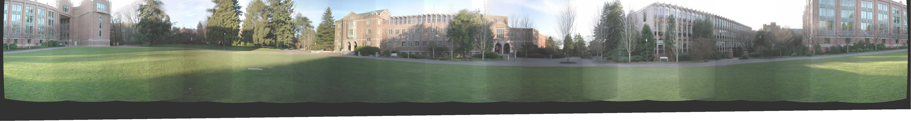
Beside the drift, the second question is the left trim, Because we are doing an panorama, so we often retake the first picture again, So in order to prevent the same object from appearing in the same panorama , we trim the left edge and subtract the total width by one image's width. But, in some panorama, it's not acutually a panorama, which is 360. like the picture below, it's clearly not 360 picture, so we don't need to trim it.
So,my algorithm keep the total width and seamlessly combine all the 4 images of yosemite.
The First one is the x direction feathering and it did works very good but there exists the problem of ghosting and can not handle the exposure problem.
The second way is the image cut and blend. The algorithm will choose which part to use instead of blending all of them and also to feathering blend in the seam of each image pair.
The result will be showed in the second part(extra credit 1~2)
(1).The first step to warp an image into spherical coordinate works well and I apply radial distortion to this part. The coefficient of the k1 and k2 is derived from calibration toolkit supported by Jean-Yves Bouguet.
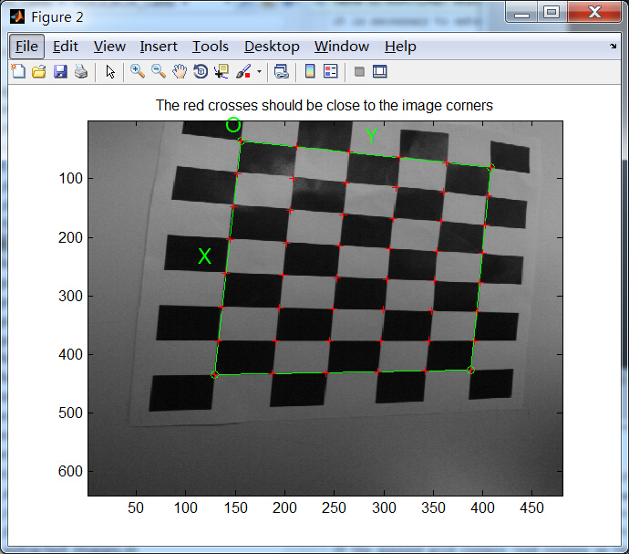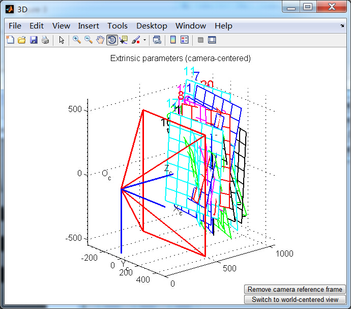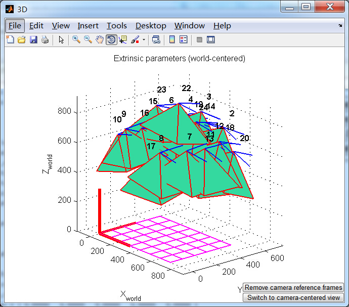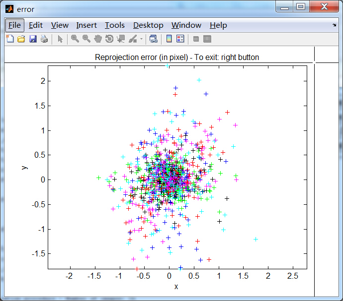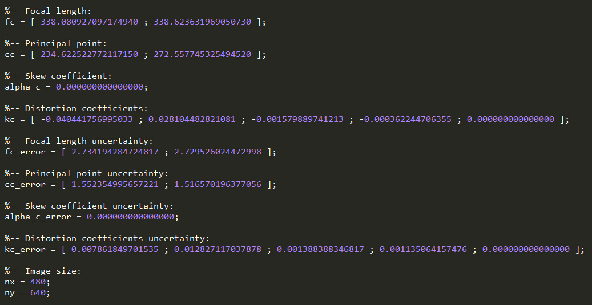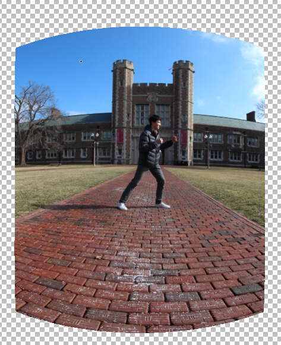
(2).About the features detection and feature descriptor, I
didm't use my own one but use the sift.The program is provided by lowe.
But the ratio match is finished by my self and works well.(3).The ransac also works well, I get almost exact result after I running it on the test_set.
(4).So once the ransan is good, the neighborhood translations is also good. The picture below showing the comparison between my calculation result and the example result. (pairlist.txt is my own one)
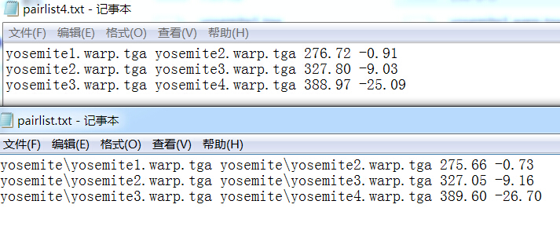
(5).I choose to correct every single col by using the ratio =
(total drift)*(x of col)/(total x direction length),and It works well,
but there is still the possiblity that the good result comes from the
using of tripod, so there is not too severe drift in y direction. The
picture below showing the comparison between my result and example
result on yosemite.The drift has been well handled. 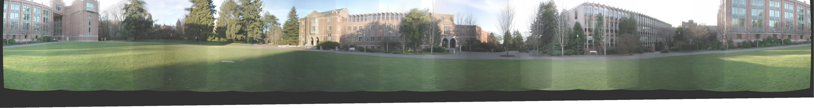
Beside the drift, the second question is the left trim, Because we are doing an panorama, so we often retake the first picture again, So in order to prevent the same object from appearing in the same panorama , we trim the left edge and subtract the total width by one image's width. But, in some panorama, it's not acutually a panorama, which is 360. like the picture below, it's clearly not 360 picture, so we don't need to trim it.
So,my algorithm keep the total width and seamlessly combine all the 4 images of yosemite.
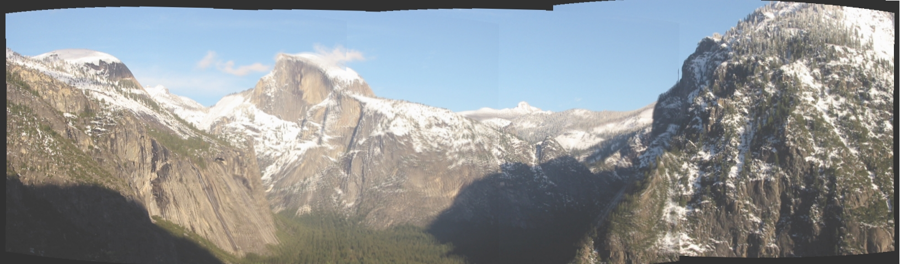
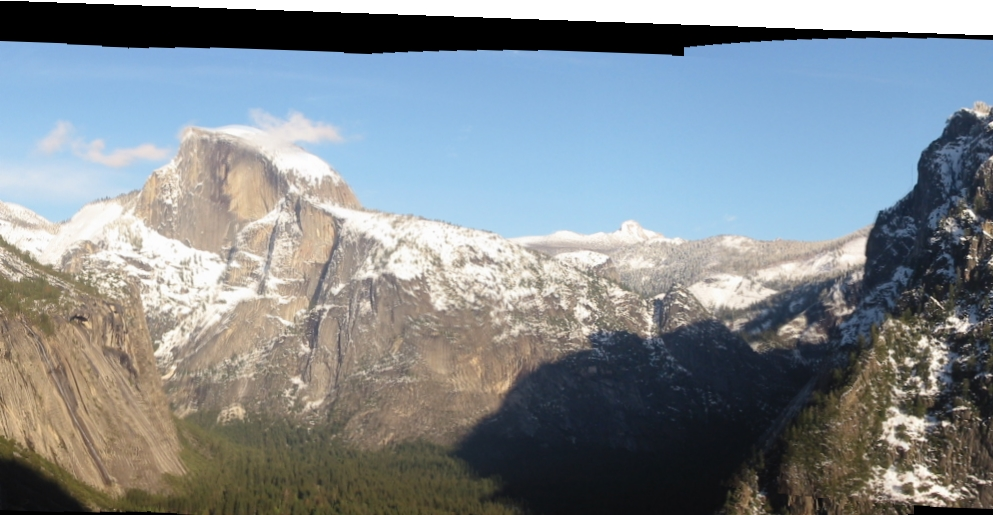
(6).I used two way of blending. or should not use blending.The First one is the x direction feathering and it did works very good but there exists the problem of ghosting and can not handle the exposure problem.
The second way is the image cut and blend. The algorithm will choose which part to use instead of blending all of them and also to feathering blend in the seam of each image pair.
The result will be showed in the second part(extra credit 1~2)
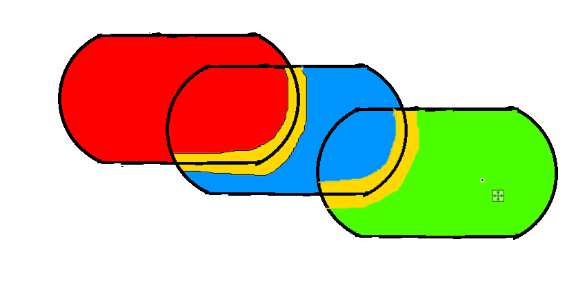
This is how I did my blend and cut job,
the red color means the pixel for the left most image, blue for middle
one, green for right most one.The yellow area means blend using
feathering.
I simply use the former image's pixel information and when reach the boundary, I use the feathering method to blend. so the result will be better.
I simply use the former image's pixel information and when reach the boundary, I use the feathering method to blend. so the result will be better.
2.Extra Credit
1.de-ghost.
2.same person in different picture.
3.graph cut
1.de-ghost.
2.same person in different picture.
3.graph cut
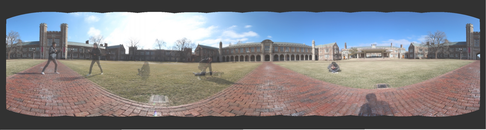
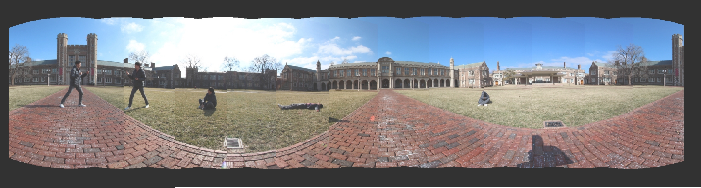
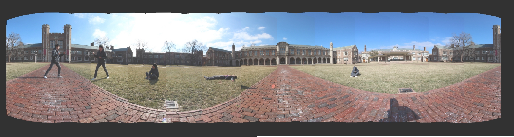
My classmate Wu lei ran across each shot when I took the image
for panorama, So this set of images make me finsh the de-ghost and one
person in each camera three parts in once.
We can see from the upper picture which applied the x direction feathring. So we can see the person like a ghost appeared in each picture and being transparent .This happened because the moving object walk across each picture, object A do not appear in the same blend area, so, after feathering, the object A will have weight less than 1 so appeared like transparent .
The detail of implement has been discussed in the (6) in part 1 summary.
The best solution is to use cut but not blend, decide to use which part of image instead of blending them all. But the result is also bad when it comes to the edge,I mean it can not achieve "seamless", So I made feathering blend on a relatively narrow area around the seam of each image pair.
4.apply raidal distortion
We can see from the upper picture which applied the x direction feathring. So we can see the person like a ghost appeared in each picture and being transparent .This happened because the moving object walk across each picture, object A do not appear in the same blend area, so, after feathering, the object A will have weight less than 1 so appeared like transparent .
The detail of implement has been discussed in the (6) in part 1 summary.
The best solution is to use cut but not blend, decide to use which part of image instead of blending them all. But the result is also bad when it comes to the edge,I mean it can not achieve "seamless", So I made feathering blend on a relatively narrow area around the seam of each image pair.
4.apply raidal distortion
I apply the radial distortion within the
warpSpherical.cpp, the coefficients come from the calibration using
check box. I took 24 checkbox picture from different angle and
calibrate the camera to derive the exact parameter for focal length and
k1 k2.
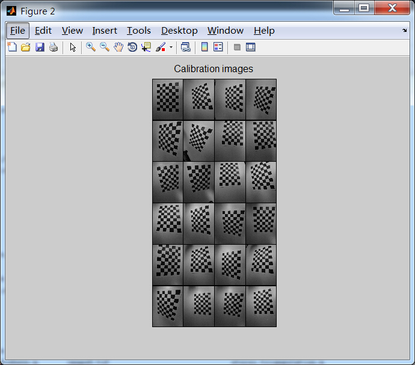
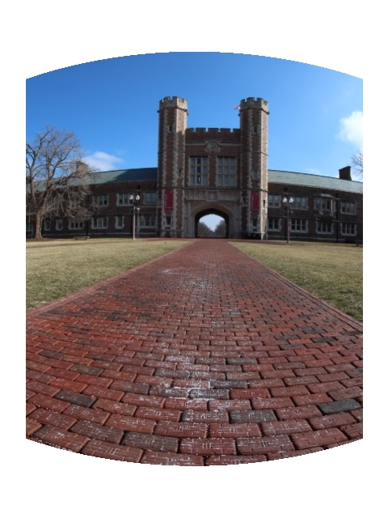
left image: without radial distortion right image: with radial distortion
left image: without radial distortion right image: with radial distortion
{kind=link}
{kind=link}